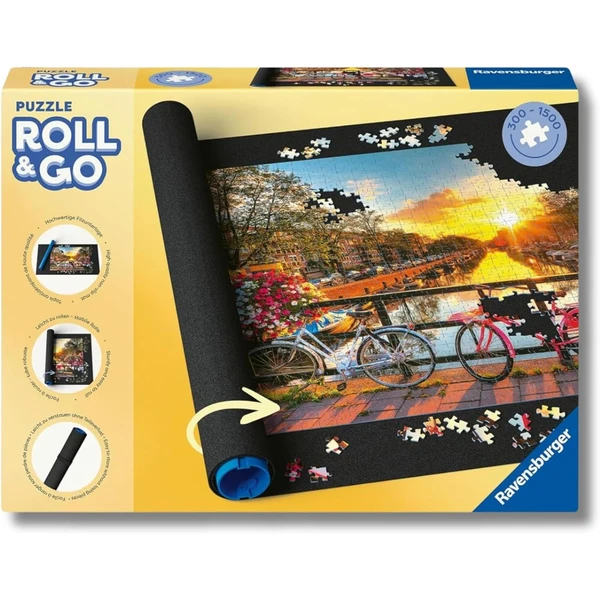
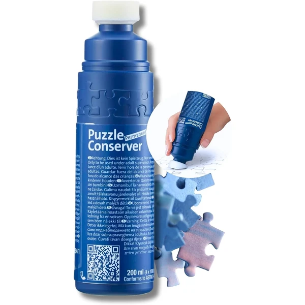

✨ Guía especial
Más allá del propio puzzle, hay unos pocos accesorios que marcan la diferencia entre montarlo cómodamente o pasar apuros: una superficie donde las piezas no se muevan, y una forma de conservar el resultado una vez terminado. Aquí tienes los dos imprescindibles.
Un tapete de goma eva cumple una doble función muy útil en cualquier casa con niños pequeños: por un lado, es una alfombra de juego blanda y segura para bebés y primera infancia; por otro, es la superficie perfecta para montar puzzles grandes, ya que evita que las piezas se deslicen y permite enrollarlo para guardar el puzzle a medio montar sin perder el progreso.
Superficie blanda y antideslizante, válida tanto como alfombra de juego para bebés como base estable para puzzles de muchas piezas.

Tapete Ver en Amazon →Después de horas de montaje, muchas familias deciden conservar el puzzle terminado como si fuera un cuadro. El proceso es más sencillo de lo que parece:

Pegamento Ver en Amazon →